Guia da Miu: Cegueira, Críticos Mágicos e Controle em Hero Wars Alliance
- Por: Alexandre Domingos. .
Miu é o tipo de heroína de suporte que pode mudar completamente a forma como um time mágico funciona em Hero Wars Alliance. À primeira vista, o kit dela parece incomum porque ela espalha Cegueira pelo campo de batalha e até mantém a si mesma cegada. Mas esse design estranho esconde uma recompensa muito perigosa: aliados cegados se tornam mais consistentes, os críticos mágicos ficam mais fortes e a evasão dos inimigos deixa de ser uma resposta segura.
Se você está se perguntando se a Miu é apenas um pick de controle de nicho ou uma futura heroína central para times de magos focados em burst, este guia é para você. Aqui você encontrará uma visão clara de quem é a Miu, onde ela se encaixa, quais aliados liberam o melhor valor dela e quais são os principais pontos fortes e fracos que você precisa conhecer antes de investir recursos.

Quem é Miu em Hero Wars Alliance?
Miu é uma heroína de Suporte da facção Way of Mystery que luta na linha de trás e é especializada em sinergias mágicas baseadas em Cegueira. Em vez de funcionar como um simples suporte defensivo, ela transforma a Cegueira em uma vantagem para todo o time, ajudando aliados a acertarem ataques com mais consistência, aumentando a chance de crítico mágico e melhorando janelas de burst contra inimigos cegados.
- Classe principal: Suporte
- Posição: Linha de trás
- Atributo principal: Inteligência
- Facção: Way of Mystery
- Sinergia: Electra, Aurora, Soleil, Polaris, Fólio e Satori
O que torna a Miu empolgante é a quantidade de camadas de valor que ela consegue acumular ao mesmo tempo. As habilidades dela cegam inimigos, fortalecem aliados cegados, recompensam acertos críticos com Perfuração Mágica e punem alvos já cegados com dano mágico extra. Na composição certa, ela faz times mágicos rápidos parecerem mais afiados, mais seguros e muito mais difíceis de serem evitados.
Ela parece especialmente promissora ao lado de heróis que já querem suporte para Crítico Mágico ou pressão mágica constante. Isso dá à Miu uma identidade forte como uma especialista com potencial real em metas futuras, principalmente se times baseados em Cegueira continuarem recebendo novas ferramentas.
Prós e contras da Miu - Hero Wars Alliance
✅ Prós
- Transforma Cegueira em vantagem para o time, deixando aliados cegados mais precisos e mais difíceis de serem anulados por evasão.
- Aumenta a chance de crítico mágico e o dano crítico para aliados focados em magia.
- Causa dano extra em inimigos cegados e ajuda times de burst a garantirem eliminações com mais rapidez.
- Adiciona Perfuração Mágica após acertos críticos, melhorando a pressão constante em composições mágicas.
❌ Contras
- Parece depender bastante de heróis de sinergia e não mostra tanta independência sozinha.
- Grande parte do valor dela está ligada ao tempo ativo de Cegueira, então matchups ruins podem reduzir seu impacto.
- Se encaixa muito melhor em times mágicos e orientados a críticos do que em composições genéricas.
- A disponibilidade de Soul Stones e o valor dela para Hydra ainda não estão definidos.
Miu - Comparação dos atributos máximos dos Talismãs
A Miu possui dois talismãs disponíveis: Talisman of Storm e Talisman of Priestess. O primeiro concede Inteligência e Armadura, enquanto o segundo concede Chance de Crítico Mágico e Ataque Mágico.
| Atributo |
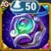 Talisman of Storm |
|
|---|---|---|
 Intelligence Intelligence |
16,141 |
14,141 |
 Agility Agility |
2,503 |
2,503 |
 Strength Strength |
2,485 |
2,485 |
 Health Health |
655,004 |
655,004 |
 Ataque Físico Ataque Físico |
21,693 |
19,693 |
 Ataque Mágico Ataque Mágico |
146,140 |
159,940 |
 Defesa Mágica Defesa Mágica |
21,679 |
19,679 |
 Perfuração Mágica Perfuração Mágica |
12,660 |
12,660 |
 Chance de Crítico Mágico Chance de Crítico Mágico |
5,040 |
9,040 |
 Dilaceramento Dilaceramento |
1,358 |
1,358 |
 Resistência Resistência |
2,790 |
2,790 |
Guia do Talismã da Miu Hero Wars Alliance
Talismãs importam muito mais do que skins quando você está escolhendo equipamento para uma luta real, porque apenas o talismã equipado concede seu bônus em batalha. A Miu agora tem dois caminhos de talismã: Talisman of Storm para Inteligência e Armadura, e Talisman of Priestess para Chance de Crítico Mágico e Ataque Mágico.
Talismã da Tempestade
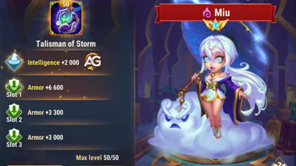
O Talisman of Storm é o talismã mais seguro e versátil da Miu. Seu atributo principal concede +2.000 de Inteligência, e como Inteligência é o atributo principal da Miu, isso se converte imediatamente em +6.000 de Ataque Mágico, +2.000 de Defesa Mágica e +2.000 de Ataque Físico. Para uma maga de suporte que escala tanto com Ataque Mágico, esse é um pacote de atributos bem estável.
Os slots de reroll são ainda mais diretos: os três rolam Armadura. Na prática, você deve tratá-los como um único bônus combinado, porque o que realmente importa é o total. A Miu ganha +19.800 de Armadura com o pacote completo de reroll, o que representa um aumento enorme de durabilidade para uma heroína da linha de trás que ainda precisa sobreviver tempo suficiente para manter a pressão de Cegueira e continuar apoiando magos aliados.
Esse talismã é especialmente valioso quando a Miu precisa sobreviver à pressão física. Ele ainda melhora Lightning Strike, Veil of Insight, Blind Fury, Gift of the Storm e Blinding Stormcloud pelo ganho de Ataque Mágico vindo da Inteligência, enquanto os rerolls de Armadura tornam a Miu muito mais difícil de eliminar cedo.
|
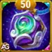 Talisman of Storm |
Atributo principal total |
|---|---|
|
Inteligência +2.000 |
+6.000 Ataque Mágico +2.000 Defesa Mágica +2.000 Ataque Físico |
| Slot 1 | Slot 2 | Slot 3 | Bônus total de reroll |
|---|---|---|---|
|
Armadura +6.600 |
Armadura +6.600 |
Armadura +6.600 |
Armadura +19.800 |
Talisman of Priestess
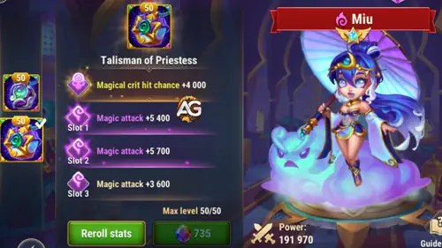
O Talisman of Priestess é o segundo talismã mais agressivo da Miu. Seu atributo principal concede +4.000 de Chance de Crítico Mágico, combinando muito bem com a identidade dela como suporte para times de crítico mágico. Com esse talismã equipado, a Chance de Crítico Mágico final da Miu chega a 9.040.
Os slots de reroll deixam esse talismã muito mais forte para escalar as fórmulas das habilidades. Os três slots concedem Ataque Mágico +6.600, totalizando +19.800 de Ataque Mágico. Com esse talismã equipado, a Miu chega a 159.940 de Ataque Mágico, deixando suas fórmulas de dano e suporte mais altas do que com o Talisman of Storm.
Use este talismã quando a Miu estiver bem protegida e você quiser mais escalonamento ofensivo. Ele é especialmente atraente em times de crítico mágico com heróis como Electra, Polaris, Fólio e Satori, porque o kit da Miu recompensa janelas de crítico e mantém a Perfuração Mágica ativa com mais consistência.
|
Talisman of Priestess |
Atributo principal total |
|---|---|
|
Chance de Crítico Mágico +4.000 |
+4.000 Chance de Crítico Mágico |
| Slot 1 | Slot 2 | Slot 3 | Bônus total de reroll |
|---|---|---|---|
|
Ataque Mágico +6.600 |
Ataque Mágico +6.600 |
Ataque Mágico +6.600 |
Ataque Mágico +19.800 |
Dica do Alexandre: Use Talisman of Storm quando a Miu precisar de mais proteção contra dano físico. Troque para Talisman of Priestess quando seu time conseguir mantê-la segura e você quiser mais escalonamento de Ataque Mágico, além de mais Chance de Crítico Mágico para composições mágicas ofensivas.
Prioridade de upgrade das habilidades de Relíquias Lendárias da Miu - Hero Wars Alliance
O caminho de relíquias da Miu gira em torno de tornar a Cegueira mais fácil de usar, mais forte em lutas longas e mais recompensadora para times mágicos que dependem de críticos e pressão.
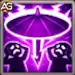
1º - Golpe Relâmpago
Lightning Strike é a habilidade que mostra o que a Miu realmente quer fazer em batalha. Ela cega heróis no centro do campo de batalha por 6,0 segundos e causa dano mágico de 72.856 (40% Ataque Mágico + 14.400) com Talisman of Storm, ou 78.376 com Talisman of Priestess. Além disso, qualquer aliado afetado por Cegueira sempre acerta os inimigos e não pode ser evitado. Se você ainda está conhecendo a heroína, esta é a forma mais fácil de entender o valor dela: ela transforma Cegueira em controle, suporte de precisão e preparação de dano ao mesmo tempo.
Fórmula com Talismã da Tempestade
- Dano Mágico: 72.856 (40% Ataque Mágico + 14.400)
- Duração da Cegueira: 6,0 segundos
Fórmula com Talisman 2: Talisman of Priestess
- Dano Mágico: 78.376 (40% Ataque Mágico + 14.400)
- Ataque Mágico usado: 159.940
- Duração da Cegueira: 6,0 segundos
Informações da animação da skill
- Palavras-chave: Cegueira, Dano Mágico, Buff
- Duração: 6,0 segundos
- Área: Todos os heróis no centro do campo de batalha
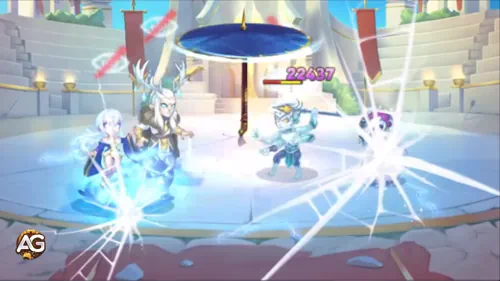
Prioridade de evolução: Muito Alta - Esse é o principal iniciador de controle da Miu e um dos maiores motivos para usá-la, então melhorá-lo cedo entrega valor prático imediato.
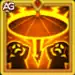
1º - Golpe Relâmpago (Habilidade Aprimorada) Relíquia Lendária: Nível 10
Esse aprimoramento de relíquia faz Lightning Strike ser muito mais perceptível em combate real, porque a Cegueira agora afeta todo o campo de batalha. A mudança é simples, mas muito poderosa. Em vez de controlar apenas o centro, a Miu passa a pressionar todas as posições ao mesmo tempo. Para jogadores que sofrem com tempo de ativação ou formação inimiga, esse upgrade é excelente porque torna o controle dela mais confiável e muito mais difícil de evitar.
Efeito com Talismã da Tempestade
- Efeito Aprimorado: A Cegueira afeta todo o campo de batalha
- Dano Mágico: 72.856 (40% Ataque Mágico + 14.400)
Efeito com Talisman 2: Talisman of Priestess
- Efeito Aprimorado: A Cegueira afeta todo o campo de batalha
- Dano Mágico: 78.376 (40% Ataque Mágico + 14.400)
- Ataque Mágico usado: 159.940
Informações da animação da skill
- Palavras-chave: Passiva, Cegueira
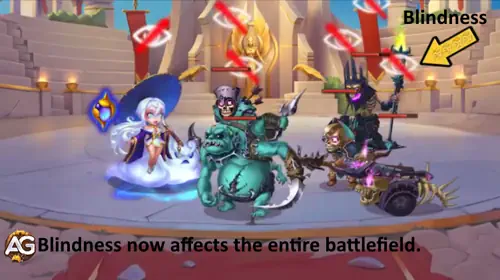
Prioridade de evolução: Muito Alta - Expandir a Cegueira para o campo inteiro melhora enormemente a cobertura de controle e torna todo o kit muito mais consistente.
2º - Véu da Perspicácia
Veil of Insight é onde a Miu se torna muito mais do que uma heroína de controle. Ela cega o aliado à sua frente por 5,0 segundos e concede Chance de Crítico Mágico extra de 26.721 (15% Ataque Mágico + 4.800) com Talisman of Storm, ou 28.791 com Talisman of Priestess. Isso significa que a Miu transforma Cegueira em buff para o próprio time, não apenas em debuff para os inimigos. Se o seu causador de dano depende de críticos mágicos, essa habilidade pode mudar completamente o teto de dano dele.
Fórmula com Talismã da Tempestade
- Aumento da Chance de Crítico Mágico: 26.721 (15% Ataque Mágico + 4.800)
- Duração da Cegueira: 5,0 segundos
Fórmula com Talisman 2: Talisman of Priestess
- Aumento da Chance de Crítico Mágico: 28.791 (15% Ataque Mágico + 4.800)
- Ataque Mágico usado: 159.940
- Duração da Cegueira: 5,0 segundos
Informações da animação da skill
- Palavras-chave: Buff, Cegueira
- Duração: 5,0 segundos
- Área: O aliado à frente da Miu
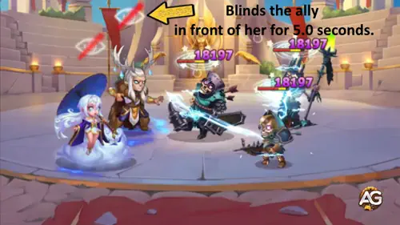
Prioridade de evolução: Muito Alta - Essa é uma das habilidades da Miu que melhor escalam com o time, porque fortalece diretamente heróis de crítico mágico e dá a ela uma identidade real de suporte.
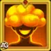
2º - Véu da Perspicácia (Habilidade Aprimorada) Relíquia Lendária: Nível 20
Esse aprimoramento torna o suporte da Miu muito mais explosivo porque os Críticos Mágicos de aliados cegados agora causam 150% a mais de dano. Em termos simples, primeiro a Miu ajuda um aliado a critar com mais frequência, e depois essa relíquia faz esses críticos ficarem muito mais assustadores quando acertam. É por isso que esse upgrade é tão atraente para times mágicos focados em burst.
Efeito com Talismã da Tempestade
- Aumento do Dano Crítico Mágico: 150%
Efeito com Talisman 2: Talisman of Priestess
- Aumento do Dano Crítico Mágico: 150%
- Observação extra: O efeito é o mesmo, mas Talisman of Priestess dá à Miu mais Chance de Crítico Mágico e Ataque Mágico.
Informações da animação da skill
- Palavras-chave: Buff, Cegueira, Dano Crítico Mágico
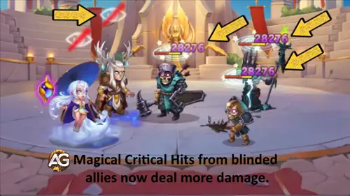
Prioridade de evolução: Muito Alta - O ganho de dano é imediato e muito real em times mágicos baseados em crítico, então essa relíquia tem excelente valor em batalha.
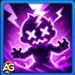
3º - Fúria Cega
Blind Fury é a habilidade que capitaliza toda a preparação da Miu. Ela causa dano mágico de 170.140 (100% Ataque Mágico + 24.000) com Talisman of Storm, ou 183.940 com Talisman of Priestess, ao inimigo central e aos inimigos próximos. Se esses inimigos já estiverem cegados, o dano sobe para 340.280 com Talisman of Storm, ou 367.880 com Talisman of Priestess. É por isso que a habilidade parece forte, mas não fica em primeiro lugar na prioridade: ela atinge o máximo potencial apenas depois que os efeitos de Cegueira já estão funcionando.
Fórmula com Talismã da Tempestade
- Dano Mágico: 170.140 (100% Ataque Mágico + 24.000)
- Dano Mágico em Inimigos Cegados: 340.280 (200% Ataque Mágico + 48.000)
Fórmula com Talisman 2: Talisman of Priestess
- Dano Mágico: 183.940 (100% Ataque Mágico + 24.000)
- Dano Mágico em Inimigos Cegados: 367.880 (200% Ataque Mágico + 48.000)
- Ataque Mágico usado: 159.940
Informações da animação da skill
- Palavras-chave: Dano Mágico
- Área: O inimigo central e os inimigos ao redor
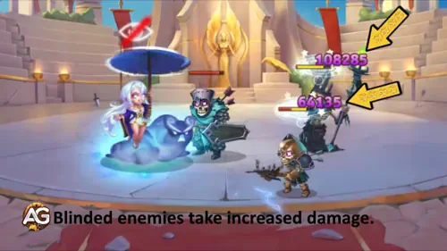
Prioridade de evolução: Alta - O dano é excelente, mas essa habilidade só fica no auge quando o restante da mecânica de Cegueira da Miu já está funcionando.
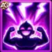
4º - Dádiva da Tempestade
Gift of the Storm ajuda a Miu a escalar melhor em lutas longas. Cada vez que a Miu ou seus aliados acertam um Crítico, a Perfuração Mágica deles aumenta em 36.428 (20% Ataque Mágico + 7.200) com Talisman of Storm, ou 39.188 com Talisman of Priestess, por 5,0 segundos. Isso pode ativar uma vez a cada 5,0 segundos. É um buff muito útil, mas depende do seu time acertar críticos primeiro, então é um pouco menos universal do que as melhores habilidades de controle e suporte da Miu.
Fórmula com Talismã da Tempestade
- Aumento de Perfuração Mágica: 36.428 (20% Ataque Mágico + 7.200)
- Duração do Buff: 5,0 segundos
Fórmula com Talisman 2: Talisman of Priestess
- Aumento de Perfuração Mágica: 39.188 (20% Ataque Mágico + 7.200)
- Ataque Mágico usado: 159.940
- Duração do Buff: 5,0 segundos
Informações da animação da skill
- Palavras-chave: Buff, Perfuração Mágica
- Duração: 5,0 segundos
- Recarga: Ativa uma vez a cada 5,0 segundos
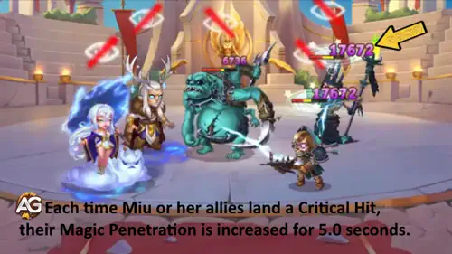
Prioridade de evolução: Alta - É um buff de escalonamento forte para o time certo, mas é mais condicional do que os upgrades mais fortes da Miu.
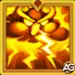
5º - Nuvem de Tempestade Cegante (Nova habilidade) Relíquia Lendária: Nível 1
Blinding Stormcloud é uma ótima nova skill de relíquia porque mantém o tema da Miu ativo sem exigir muito do jogador. A cada 10,0 segundos, ela cega o inimigo mais próximo que ainda não esteja cegado por 6,0 segundos. Se todos os inimigos já estiverem cegados, o inimigo central recebe dano mágico de 219.210 (150% Ataque Mágico) com Talisman of Storm, ou 239.910 com Talisman of Priestess. Isso faz a Miu parecer mais fluida e confiável, principalmente em batalhas longas, nas quais manter a Cegueira ativa importa muito.
Fórmula com Talismã da Tempestade
- Dano Mágico: 219.210 (150% Ataque Mágico)
- Duração da Cegueira: 6,0 segundos
Fórmula com Talisman 2: Talisman of Priestess
- Dano Mágico: 239.910 (150% Ataque Mágico)
- Ataque Mágico usado: 159.940
- Duração da Cegueira: 6,0 segundos
Informações da animação da skill
- Palavras-chave: Cegueira, Dano Mágico
- Recarga: 10,0 segundos
- Duração: 6,0 segundos
- Área: O inimigo mais próximo que não estiver cegado
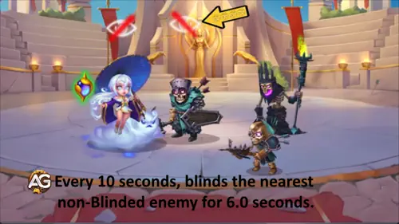
Prioridade de evolução: Muito Alta - Ela adiciona pressão gratuita de Cegueira e dano extra, tornando a Miu muito mais fácil de pilotar e mais consistente de uma luta para outra.
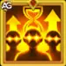
6º - Cegueira Eterna (Nova habilidade) Relíquia Lendária: Nível 30
Eternal Blindness é o upgrade tardio de relíquia que empurra ainda mais a identidade da Miu. Ele aumenta a duração de todos os efeitos de Cegueira em 3,0 segundos. Na prática, isso significa que Lightning Strike dura 9,0 segundos, Veil of Insight dura 8,0 segundos e Blinding Stormcloud dura 9,0 segundos. O motivo prático para essa prioridade alta é simples: mais tempo de Cegueira significa mais controle, mais tempo ativo contra evasão e mais tempo para os buffs da Miu importarem.
Efeito com Talismã da Tempestade
- Aumento da Duração da Cegueira: +3,0 segundos
- Duração total de Golpe Relâmpago: 9,0 segundos
- Duração total de Véu da Perspicácia: 8,0 segundos
- Duração total de Nuvem de Tempestade Cegante: 9,0 segundos
Efeito com Talisman 2: Talisman of Priestess
- Aumento da Duração da Cegueira: +3,0 segundos
- Duração total de Golpe Relâmpago: 9,0 segundos
- Duração total de Véu da Perspicácia: 8,0 segundos
- Duração total de Nuvem de Tempestade Cegante: 9,0 segundos
Informações da animação da skill
- Palavras-chave: Passiva, Cegueira
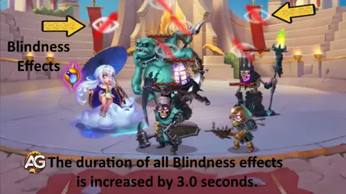
Prioridade de evolução: Muito Alta - Esse upgrade fortalece todo o sistema de Cegueira que torna a Miu valiosa, então seu impacto continua enorme mesmo tarde no caminho das relíquias.
Melhor skin para Miu Hero Wars Alliance
A melhor ordem de skins da Miu prioriza primeiro Vida e depois Inteligência, porque a sobrevivência dá mais consistência para ela manter a Cegueira ativa, apoiar os aliados e ciclar suas habilidades.
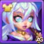
Skin Padrão
Bônus de Atributo: Inteligência +1.365
Atributos Derivados: +4.095 Ataque Mágico, +1.365 Defesa Mágica, +1.365 Ataque Físico.
Prioridade de evolução: Média Alta – Essa skin continua muito útil porque Inteligência melhora várias partes da Miu ao mesmo tempo, mas fica atrás da Skin Astral porque a Miu ganha mais valor prático ao aumentar a sobrevivência primeiro.
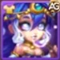
Skin Astral
Bônus de Atributo: Vida +106.645
Prioridade de evolução: Alta – Essa é a melhor skin da Miu para evoluir primeiro porque a Vida extra ajuda ela a permanecer ativa por mais tempo, manter a Cegueira com mais consistência e apoiar a equipe melhor em lutas longas.
Prioridade de evolução dos artefatos da Miu Hero Wars Alliance
A prioridade dos artefatos da Miu é centrada primeiro em um suporte mágico mais forte, depois em melhor escalonamento para o próprio kit e só depois em sobrevivência extra.
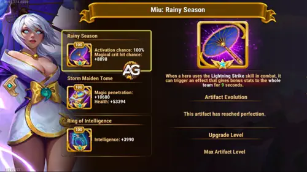
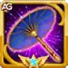
1º - Artefato de Arma: Estação Chuvosa
Atributos: Chance de Crítico Mágico +8.898 para toda a equipe por 9 segundos.
Rainy Season is Miu's most important artifact because it activates when she uses Lightning Strike and immediately gives a team-wide Magical Crit Hit Chance buff for 9 seconds. That fits perfectly with her role as a support who wants allies to benefit from Blindness effects and magical critical damage windows. In real battles, this artifact improves not only Miu's value, but also the value of the entire magic team around her.
Prioridade de evolução: Muito Alta – Esse é o melhor artefato para evoluir primeiro porque é para a equipe toda, ativa junto com a ultimate e apoia diretamente a identidade baseada em críticos das composições mais fortes dela.
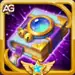
2º - Artefato de Livro: Tomo da Donzela da Tempestade
Atributos: Perfuração Mágica +10.680 | Vida +53.394
O artefato de Livro é um segundo passo forte porque dá para a Miu duas coisas que ela realmente usa bem: mais Perfuração Mágica para melhorar a pressão ofensiva e mais Vida para que ela sobreviva tempo suficiente para continuar ciclando suas habilidades de suporte. Ele não fortalece todo o time como a arma faz, mas ainda melhora a presença direta da Miu em combate de forma prática.
Prioridade de evolução: Alta – Um upgrade muito sólido depois do artefato de arma, principalmente se você quiser mais impacto pessoal e lutas longas um pouco mais seguras.

3º - Artefato de Anel: Anel da Inteligência
Atributos: Inteligência +3.990
Ataque Mágico vindo da Inteligência: +11.970
Defesa Mágica vinda da Inteligência: +3.990
Ataque Físico vindo da Inteligência: +3.990
O Ring of Intelligence ainda é útil, porque Inteligência é o atributo principal da Miu e melhora vários valores secundários ao mesmo tempo. O maior ganho aqui é +11.970 de Ataque Mágico, o que ajuda as fórmulas dela a escalarem melhor. Mesmo assim, esse artefato normalmente é menos urgente do que a arma e o livro, porque representa um aumento pessoal de atributos, e não um gatilho para o time inteiro ou um pacote misto de ofensiva e sobrevivência.
Prioridade de evolução: Média Alta – Tem bom valor de escalonamento, mas normalmente deve vir depois da arma e do livro porque esses dois entregam mais impacto prático em lutas reais.
Prioridade de evolução dos glifos da Miu
A ordem de glifos da Miu em batalha prioriza primeiro um escalonamento mágico mais forte, depois suporte para crítico e atributos centrais, deixando a defesa pura para mais tarde.
1º Glifo - Ataque Mágico
This is Miu's most direct power increase. More Magic Attack means stronger damage on her offensive skills and better scaling on the support formulas that depend on Magic Attack, so it improves her value in almost every fight.
Atributos no Nível 80: +12.850 Ataque Mágico
Prioridade de evolução: Muito Alta – O melhor glifo para evoluir primeiro porque melhora ao mesmo tempo o dano e o escalonamento do suporte.
2º Glifo - Vida
Health helps Miu survive long enough to keep applying Blindness, supporting allies, and cycling her skills in longer battles. It does not raise her damage directly, but it improves how reliably she stays active.
Atributos no Nível 80: +122.800 Vida
Prioridade de evolução: Média Alta – Forte para sobrevivência, mas normalmente menos urgente do que os glifos ofensivos e focados em crítico que definem o papel principal dela.
3º Glifo - Chance de Crítico Mágico
Esse glifo combina muito bem com os melhores times da Miu. Como o kit dela apoia ativamente jogadas de crítico mágico e recompensa aliados cegados, mais Chance de Crítico Mágico ajuda as composições preferidas dela a acertarem suas melhores janelas de dano com mais frequência.
Atributos no Nível 80: +4.170 Chance de Crítico Mágico
Prioridade de evolução: Muito Alta – Um dos melhores glifos dela porque apoia diretamente a identidade baseada em crítico das sinergias mais fortes.

4º Glifo - Armadura
Armor gives Miu extra protection against physical damage and can help her stay alive against aggressive teams. Still, it does not improve the power of her formulas, so it is more of a defensive luxury than a core upgrade.
Atributos no Nível 80: +12.850 Armadura
Prioridade de evolução: Média – Útil em matchups mais difíceis, mas deve vir depois dos glifos que melhoram de forma mais direta o impacto real dela em batalha.
5º Glifo - Inteligência
Inteligência é o atributo principal da Miu, então este glifo entrega um pacote equilibrado de ofensiva e defesa. Ele adiciona Ataque Mágico, Defesa Mágica e Ataque Físico ao mesmo tempo. Isso o torna eficiente, mas ainda um pouco menos explosivo do que o glifo puro de Ataque Mágico e um pouco menos focado do que o glifo de Chance de Crítico Mágico.
Atributos no Nível 80: +2.110 Inteligência
Ataque Mágico vindo da Inteligência: +6.330
Defesa Mágica vinda da Inteligência: +2.110
Ataque Físico vindo da Inteligência: +2.110
Prioridade de evolução: Alta – Um glifo forte e completo, que escala bem com o kit dela, mas normalmente fica um passo atrás dos upgrades ofensivos mais especializados.
Como counterar a Miu em Hero Wars Alliance
Miu is most vulnerable to heroes that punish high-Intelligence targets before her Blindness engine fully takes over the fight. Here is her most direct counter.
Cornelius

Por que Cornelius countera a Miu: A Miu é um suporte baseado em Inteligência, então ela é exatamente o tipo de alvo que o Cornelius quer atingir. A habilidade Heavy Wisdom acerta o inimigo com a maior Inteligência e causa dano com base nesse atributo. No nível máximo, a skill causa 21.795 de dano a cada 100 pontos de Inteligência do alvo com a fórmula 21.795 (20% Atq. Mág. + 3.600). Como a Miu chega a 16.141 de Inteligência com Talisman of Storm, o Cornelius pode acertá-la com um burst devastador antes que ela tenha tempo suficiente para controlar o campo com os efeitos de Cegueira. Na prática, isso significa que o Cornelius pode remover uma das maiores forças da Miu, eliminando-a cedo ou forçando o time dela a jogar sem o suporte dela.
Sinergia da Miu em Hero Wars Alliance
A Miu funciona melhor em times mágicos que conseguem explorar Cegueira, suporte para Crítico Mágico e janelas repetidas de Perfuração Mágica. Estas são as principais sinergias dela em ordem alfabética.
Aurora
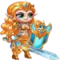
Aurora gives Miu the frontline stability her teams need. Aurora absorbs magic pressure well, provides dodge-based survivability, and keeps the enemy busy while Miu builds control through Lightning Strike and Blinding Stormcloud. Since Miu is much better in longer fights where blinded allies can keep attacking without being evaded, Aurora's durability makes that battle plan far more reliable.

Electra is one of Miu's best partners because both heroes push the same magic-control identity. Electra adds more Blind application, boosts allied Magic Attack, and pressures enemy Magic Defense, while Miu adds Magical Crit Hit Chance, extra Magic Penetration, and battlefield-wide Blindness after her relic upgrades. Together they create a team that scales harder and makes enemy dodge strategies much less effective.

Fólio se beneficia diretamente das ferramentas ofensivas que a Miu traz. O Veil of Insight dela melhora a Chance de Crítico Mágico para aliados cegados e Gift of the Storm aumenta a Perfuração Mágica após acertos críticos, então o Fólio ganha janelas melhores de burst e dano de sequência mais confiável. Ele também aproveita o controle extra da Miu, porque isso dá mais tempo para o dano mágico dele entrar com consistência.
Peppy
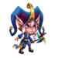
Peppy adiciona mais pressão desestabilizadora ao mesmo tipo de luta que a Miu quer criar. A Miu amplia a cobertura de Cegueira e melhora o suporte para críticos mágicos, enquanto a Peppy contribui com controle extra e dano mágico para punir inimigos que já estão tendo dificuldade de responder corretamente. Essa dupla é especialmente útil quando você quer que o time inimigo continue instável por tempo suficiente para seus carregadores mágicos da linha de trás assumirem a luta.

Polaris gives Miu another strong control-based magic partner. Her stuns help hold enemies in place while Miu spreads Blindness, and Polaris also values the Magical Crit Hit Chance and Magic Penetration support that Miu provides. In practice, this combination makes it easier for the team to chain control, keep enemies exposed, and convert Miu's support effects into real burst damage.

Satori is a natural fit because he wants strong magic support and punishes teams during short damage windows. Miu improves those windows with Veil of Insight and Gift of the Storm, while her Blindness effects make it harder for enemies to avoid pressure at the wrong moment. The result is a more explosive magic core that can break through teams once Satori starts converting support into burst.
Melhores times para Miu - Hero Wars Alliance
- Electra, Byrna, Fólio, Polaris, Miu
- Satori, Byrna, Soleil, Somna, Miu
- Byrna, Tempus, Polaris, Octavia, Miu
- Electra, Byrna, Soleil, Fólio, Miu
- Electra, Kayla, Soleil, Aidan, Miu
- Electra, Kayla, Cornelius, Aidan, Miu
- Electra, Guus, Soleil, Iris, Miu
Melhores times da Miu - sugestão de vídeo
Conclusão
Miu é uma heroína de suporte de alto valor para equipes mágicas em Hero Wars Alliance porque ela faz muito mais do que apenas aplicar Blindness. Seu conjunto de habilidades melhora a precisão dos aliados contra evasão, fortalece estratégias baseadas em Acerto Crítico Mágico, abre janelas para Penetração Mágica e adiciona pressão constante de controle quando suas relíquias são desbloqueadas.
Para tirar o máximo proveito dela, construa em torno de Ataque Mágico, use Talisman of Storm quando ela precisar de mais segurança física e troque para Talisman of Priestess quando quiser mais escalonamento de Ataque Mágico e suporte para Crítico Mágico. Combine-a com aliados que possam aproveitar imediatamente a Blindness e o dano explosivo mágico, especialmente Electra, Polaris, Fólio e Satori. Com a equipe certa, Miu transforma lutas longas em batalhas controladas, onde seu núcleo mágico continua escalando enquanto o inimigo perde consistência.
Sugestão de vídeo da Miu
Explore mais guias de times mágicos de Hero Wars Alliance!


Deixe sua opinião!
Você gostou do nosso guia da Miu para Hero Wars Alliance? Houve algo que você não entendeu ou gostaria de sugerir mudanças? Convidamos você a participar da nossa seção de comentários na página do Blog Alexandre Games. Fique à vontade para compartilhar sua opinião, fazer perguntas e sugerir melhorias.
Clique no botão abaixo para começar: